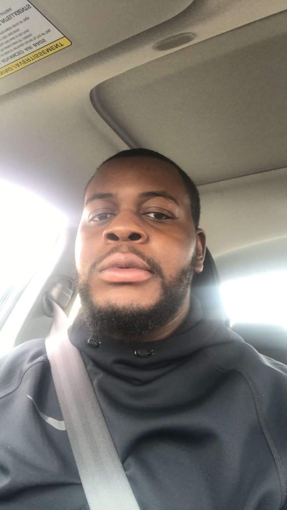

My name is Ikp Obaseki. I am in the Interactive Media Design program at Algonquin College. I have a Bachelor of Arts degree from Carleton University. I believe my next step once I complete this program is to be a web developer for a good tech company in Ottawa, or Toronto. I don’t intend on doing any more studying, but 7 years from now life can look very different. My interests are mainly music & sports. When it comes to music, I will always give any genre a chance. My favourite genres are drill & afro-swing/fusion.
My favorite artistes are Jay-Z, Digga D, Burna Boy & J-Hus. From Jay-Z, my favourite song is “Meet The parents” from his album called “The BP2: The Gift & The Curse”, by Digga D it’s his latest single called “Pump 101”, by Burna Boy its “Friend Like Me” and finally by J-Hus it’s a track named “Good Time” from his album called “Common Sense”. With regards to sports, my top 3 are football, American football & basketball. My favorite teams are Manchester united, Los Angeles Lakers & Kansas City Chiefs. My favorite players are Paul Pogba, Lebron James & Tyreek Hill. As of today, my career goal it to be gainfully employed as a web developer by the 5 th of May 2023
"I know i'm going to get got, but i'm going to get mine more than i get got, though" this quote is by Marhsawn Lynch, ex NFL running back.
This is an image of Ikp Obaseki
